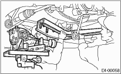

Install in the reverse order of removal.
1. Position the differential front member with the vehicle by passing the member under the parking brake cable and securing it to rear differential.
NOTE:
When installing the differential front member, be careful of the order for installation of the stoppers.

2. Insert the DOJ of the rear drive shaft into the rear differential.
NOTE:
Before inserting, replace the side oil seal with a new part.
| ST 28099PA090 | SIDE OIL SEAL PROTECTOR |

3. Hereafter, install in the reverse order of removal.